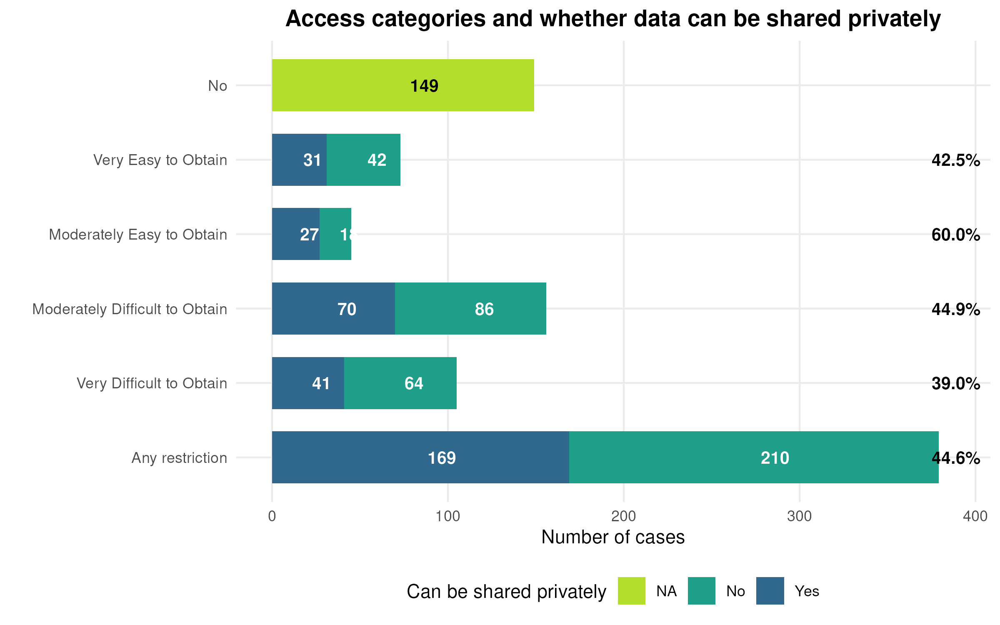
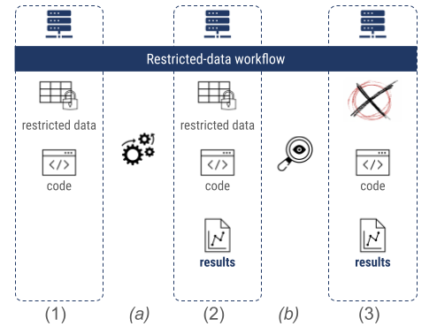
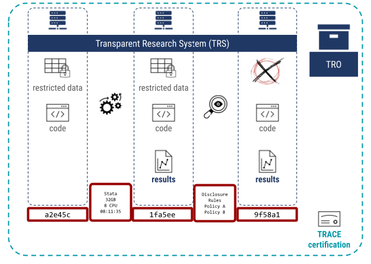

TRACE: Transparency Certified
2026-04-21
The Problem
Computational Reproducibility in the Social Sciences
- Research communities increasingly require sharing of data, code, and methods
- Trend is clear: any data that can reasonably be shared, and all code, should be made available
- Consumers combine data and code, re-run it, and validate the analysis
Computational Reproducibility in the Social Sciences
But what makes this hard in practice?
- Data withheld for ethical, legal, or contractual reasons
- Processing is time-consuming or requires rare computing resources
- Raw data may be transient, ephemeral, or subject to recall
The Scale of the Challenge
From the AEA Data Editor’s experience (2025, 384 papers assessed):
- 38% used data with no access restrictions — in scope for replication studies
- 62% used data subject to access restrictions

The Scale of the Challenge
Of those restricted papers:
- The AEA team obtained private access to 45%
- Conducted reproducibility checks despite data not being in public packages
Recent Evidence
A 2026 issue of Nature on social science reproducibility:
- Headline: “Half of social-science studies fail replication test”
- But: only 30% of articles yielded data; only 24% were attempted
- 74% of those attempted were exactly or approximately reproducible

Recent Evidence
A 2026 issue of Nature on social science reproducibility:
- Brodeur et al. (2026), crowdsourced with Sloan funding:
- 85% of 110 articles (2022–2023) were reproducible
- Required 80 replication games and 3,500+ researchers

None of these studies could access restricted data — entire swaths of social science literature remain outside scope.
The Key Question
What if it were possible to credibly demonstrate that the original execution of the computational artifacts occurred in a transparent fashion, even when data cannot be published, and is consistent with the deposited computational artifacts (code) and outputs (figures and tables)?
What if it were not necessary to re-run the code?
If reproducibility can be certified at the source, then:
- Readers can trust results and focus on robustness, not reproduction
- Researchers can convey credibility even when data cannot be shared
- The scale of verification effort shrinks dramatically
State of the Research
The Growing Demand for Computational Artifacts
Journals have increasingly required data and code sharing:
- In economics/econometrics: going back to 1985
- Authors implicitly asserted that artifacts were sufficient to reproduce results
- Documented problems → journals appointing data editors and verification staff
Services now provide active verification:
| Service | Approach |
|---|---|
| cascad | Certification service, with access to some confidential data |
| CURE | Curating for reproducibility |
| World Bank | Manual re-run in replicator’s environment |
| Codeocean | Containerized capsules with manual compliance checking |
| WholeTale / MyBinder | Re-runnable containers |
The Transparency Gap
When a reproducibility service has re-run code and issued a certificate — what actually happened?
Questions that remain unanswered:
- Was work done with input/influence from authors, or in isolation?
- Was internet access available during the run?
- What state was a database in when first queried vs. when the service ran it?
- Was code modified (inadvertently or intentionally) by verifiers?
The deeper problem:
Absent standardized protocols or vocabularies, services remain opaque.
Readers, journals, and researchers cannot compare: - Codeocean vs. World Bank - cascad vs. CURE
Particularly Difficult Cases
Sensitive / proprietary data — subject to data use agreements, ethical restrictions, or commercial contracts; cannot be re-published
Transient / ephemeral data — streaming data, data subject to recall by data subjects, data accessible only at a point in time
Large-scale / specialized compute — workflows requiring days/weeks on clusters or expensive hardware that few can reproduce
Science faces a conundrum: threats to reproducibility are universal, but actively verifying it is expensive, time-consuming, and often impossible.
The TRACE Framework
What is TRACE?
TRACE = Transparency Certified
A framework that allows inquiry into the reproducibility workflow at any stage — without requiring re-running the code.
Key insight
Document the process, not just the outputs
- File arrangements (manifests with checksums)
- Processing steps (software, timing, method, isolation)
- Cryptographic signatures by certifying organizations
Result
TRACE-compliant packages can be:
- Compared across services (Codeocean vs. World Bank)
- Inspected both by humans and automated scripts
- Trusted via organizational credibility chains
The Generic Workflow (Before TRACE)
Consider a researcher using confidential data in a Restricted Access Data Center (RADC):
- Researcher gets environment with confidential data, writes code
- Code is executed (a) → output produced
- Data custodian inspects, removes confidential data (b)
- Researcher receives code + output only (arrangement 3)

The Generic Workflow (Before TRACE)
Problem: The World Bank certificate states in English that this process was followed. Codeocean points to an FAQ. Neither is verifiable or machine-readable.
Making a Workflow TRACE-Compliant
Add a few computationally easy steps:
- Document each file arrangement (1, 2, 3) with manifests + checksums
- Describe each processing step (software-driven or manual) with salient info

Making a Workflow TRACE-Compliant
Add a few computationally easy steps:
- Express in a controlled vocabulary (TROV)
- Wrap everything into a package with a cryptographic signature → creates a TRO
Five Scenarios TRACE Addresses
SCN1 — Journal reproducibility checks
Authors use SIVACOR to demonstrate push-button reproducibility before submission. Journals with and without data editors can rely on the TRACE-compliant package. Estimated 20–40% of AEA submissions are amenable to this.
Five Scenarios (2/5)
SCN2 — Certification at the source
Long-running jobs on university clusters via SLURM can be configured with TRACE-compliant queues. Universities become producers of TROs, providing enhanced credibility to affiliated researchers.
Five Scenarios (3/5)
SCN3 — Restricted access data environments
RADCs have no vested interest in any particular paper — they satisfy the arms-length requirement. Partners at Banco de Portugal and Banca d’Italia are already implementing TRACE-compliant capabilities.
Five Scenarios (4/5)
SCN4 — Comparing reproducibility services
TRACE provides a systematic, standardized vocabulary — machine- and human-readable — to compare Codeocean, cascad, World Bank, and others.
Five Scenarios (5/5)
SCN5 — Transient resources (commercial LLMs, disappearing data)
When data or services used in computation may no longer be available, TRACE provides a record of what existed at the time of execution.
TROV, TRO, and TRS
The Three Core Concepts
| Acronym | Name | Description |
|---|---|---|
| TROV | TRO Vocabulary | Controlled vocabulary for describing computational processes |
| TRO | Trusted Research Object | A replication package described using TROV |
| TRS | Trusted Research System | The system or process used to create a TRO |
What is a TRO?
A TRO is a replication package that contains:
- All code used in the analysis
- All outputs produced
- A system description (core features of the environment)
- Information about how files changed across arrangements
- Organizational signatures — cryptographically signed affirmations
Important limitation: The organization only asserts that its process was followed — it does not assert scientific correctness or endorse findings.
The Trust Chain
TROs must be issued by organizations (not individuals):
- A journal accepts its first TRO → verifies the producing organization’s process meets its standards
- Journal publishes the TRO → adds another layer of credibility
- Other journals and researchers can rely on that credibility without further verification
This mirrors:
- PGP “circle of trust”
- Web PKI — chain of certificate authorities down to root CA
Institutions emitting TROs have strong incentives to maintain trust — their credibility depends on it.
What TROs Do and Don’t Do
TROs can:
- Confirm that artifacts not present initially were created by the provided code
- Enable principled compliance checking for data/code availability policies
- Allow human and automated comparison across services
- Provide file checksums that detect unauthorized modification
TROs cannot:
- Confirm completeness of the replication package
- Confirm correctness of the analysis
- Replace journal inspection for policy compliance
- Guarantee scientific validity
SIVACOR
The Reference Implementation
SIVACOR is the reference implementation of a TRACE-compliant Trusted Research System (TRS).
Existing services provide reproducible environments:
| Service | Strength | TRACE Gap |
|---|---|---|
| Codeocean | Containerized runs, manual compliance check | Process not machine-readable; internet accessible |
| MyBinder | Easy re-run | Requires re-running; no certificate |
| Redivis | Health data environments | No standardized process description |
| Nuvolos | Collaborative research platform | No TRACE-compliant output |
None clearly document their processes in a compatible, machine-readable fashion.
What SIVACOR Provides
SIVACOR allows authors to:
- Demonstrate push-button reproducibility in a transparent environment
- Fix minor bugs before submission — without journal resources
- Receive a TRACE-compliant TRO with organizational signature
For journals:
- Packages arrive already verified
- TRACE metadata is machine-readable and comparable
- Works for journals with and without dedicated data editors
The Bigger Picture
SIVACOR is not the only possible TRACE-compliant system:
- The framework is designed to integrate into existing architectures
- RADCs that cannot adopt SIVACOR can implement TRACE-compliant mechanisms natively
- Partners at Banco de Portugal and Banca d’Italia are doing exactly this
Universities, research data centers, and compute facilities become producers of credibility — not just reproducibility services.
Education and Outreach
Engaging Journals
[DA1] Encourage acceptance of TROs at journals, and offer use of SIVACOR
[DA2] Guidelines for journals on how to: - Inspect TROs - Ascertain utility in light of their own data and code availability policies
[DA3] Guidelines on how to guide authors in finding TRACE-compatible systems, including journal-specific or general-purpose SIVACOR instances
Core collaborations already in place with several journals — see Support Letters.
Engaging Researchers
[DR1] Dissemination: Information sessions at: - NBER Summer School - Allied Social Sciences (ASSA) - APPAM, Population Association of America (PAA) - Joint Statistical Meetings (JSM) - FSRDC network, population centers, mailing lists
[DR2] Training: Tutorials on using SIVACOR (containers in social sciences): - Web-based self-service - Recorded videos - Interactive instruction at conferences
Feedback and Adoption
[DR3] Institutional pathways: Researchers encouraged or required to use SIVACOR when: - Preparing journal submissions - Completing institutional review processes
[DR4] User surveys: - Short surveys after every SIVACOR run (failure or TRO) - Follow-up at 3 and 6 months post-TRO: submission success, satisfaction - Users obtaining TROs encouraged to cite the grant
Summary
The problem:
Computational reproducibility verification is expensive, time-consuming, and impossible for restricted-data research
The solution:
TRACE — certify the process, not just the output
The components:
- TROV — the vocabulary
- TRO — the certified artifact
- TRS / SIVACOR — the system
The goal:
Trust in published research, reduced burden on authors, journals, and reviewers